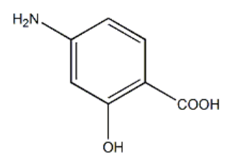
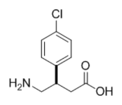

101 年第 2 次藥師藥理學與藥物化學試題與答案
這一頁是民國 101 年第 2 次藥師藥理學與藥物化學的整份歷屆試題，共 80 題，題目與標準答案出自考選部「國家考試試題及測驗式試題答案」開放資料。以下逐題列出題幹、選項與答案；要計時作答或記錄成績，請用線上練習。
考選部原始場次代碼：101100
線上作答這一科 →
全部 80 題
第 1 題
下列何者藥物之主要作用標的位於細胞膜上？
- （A）Corticosteroid
- （B）Thyroid hormone
- （C）Vitamin D
- （D）Benzodiazepine
答案：（D）
第 2 題
下列有關受體（receptor）之敘述，何者錯誤？
- （A）受體屬於大分子之醣蛋白或脂蛋白（lipoprotein）組成
- （B）藥物－受體間之結合大多屬於可逆性之結合
- （C）通常受體數目為固定的，不會受到調控
- （D）藥物－受體作用訊息傳遞大小與藥物之結合多少有關
答案：（C）
第 3 題
下列何種婦女仍可親自哺乳？
- （A）使用ampicillin之婦女
- （B）使用鋰鹽之婦女
- （C）使用propylthiouracil治療甲狀腺機能亢進之婦女
- （D）使用diazepam治療seizure之婦女
答案：（A）
第 4 題
下列何種藥物之作用受體並非存於細胞質中？
- （A）Estrogen
- （B）ACTH
- （C）Glucocorticoid
- （D）Androgen
答案：（B）
第 5 題
下列有關臨床試驗之敘述，何者正確？
- （A）藥品上市前之臨床試驗可分四期（phase 1-4）
- （B）第一期臨床試驗常包括安慰劑組
- （C）第二期臨床試驗必須採用雙盲實驗設計
- （D）第三期臨床試驗為進一步建立藥物之安全性與有效性
答案：（D）
第 6 題
磺胺藥引致之Stevens-Johnson症候群被歸類於過敏反應之第幾型？
- （A）第一型
- （B）第二型
- （C）第三型
- （D）第四型
答案：（C）
第 7 題
抗癌藥物5-Fluorouracil經癌細胞代謝成5-FdUMP後，此代謝物可抑制下列何種酶，進而抑制DNA複製？
- （A）Dihydrofolate reductase
- （B）Hypoxanthine-guanine phosphoribosyltransferase
- （C）Topoisomerase II
- （D）Thymidylate synthase
答案：（D）
第 8 題
有關topotecan之藥理作用，下列敘述何者錯誤？
- （A）具有骨髓抑制之毒性
- （B）有些病人會引起劇烈腹瀉
- （C）可治療卵巢癌
- （D）為第二型拓樸異構酵素抑制劑
答案：（D）
第 9 題
抗生素Imipenem合併使用下列何種藥物，可減少其被renal dehydropeptidase破壞？
- （A）Tazobactam
- （B）Colistin
- （C）Trimethoprim
- （D）Cilastatin
答案：（D）
第 10 題
下列藥物中樞均可達到治療濃度，惟何者除外？
- （A）Ampicillin
- （B）Metronidazole
- （C）Erythromycin
- （D）Fluconazole
答案：（C）
第 11 題
下列有關Rho(D) immune globulin的敘述，何者錯誤？
- （A）是一種含15%濃度之IgG溶液抗體
- （B）母親應在生下Rh陽性嬰兒24-72時內注射該免疫球蛋白
- （C）嬰兒應在生下後立即注射
- （D）臨床上不良反應少見
答案：（C）
第 12 題
下列有關維生素B12之敘述，何者錯誤？
- （A）生理量之維生素B12須與內生性因子（intrinsic factor）結合才能由小腸吸收
- （B）維生素B12缺乏會導致tetrahydrofolate排空
- （C）維生素B12缺乏會導致巨母細胞性貧血（megaloblastic anemia）
- （D）治療維生素B12缺乏最好使用維生素B12口服製劑
答案：（D）
第 13 題
關於Raloxifene的敘述，下列何者錯誤？
- （A）降低低密度脂蛋白（LDL）
- （B）會造成子宮內膜（endometrium）的增生
- （C）可用於預防停經後婦女骨質疏鬆
- （D）可預防有特殊危險因子之婦女乳癌
答案：（B）
第 14 題
Finasteride最適用於下列何種症狀？
- （A）貧血
- （B）陽痿（impotence）
- （C）男性禿頭
- （D）青春痘（acne）
答案：（C）
第 15 題
下列何種藥物最適於治療Graves' disease？
- （A）Methimazole
- （B）Levothyroxine
- （C）Vitamin D
- （D）Iodide
答案：（A）
第 16 題
下列有關Thioamides之敘述，何者錯誤？
- （A）易併發斑疹及丘疹之副作用
- （B）易伴隨發燒現象
- （C）藥物作用之起效較慢，需三至四週
- （D）為黴菌感染用藥
答案：（D）
第 17 題
下列何者為服用Angiotensin-converting enzyme抑制劑較常見的副作用？
- （A）肝炎
- （B）低血鉀
- （C）顆粒性白血球缺乏
- （D）血管水腫
答案：（D）
第 18 題
有青光眼之高血壓患者，應避免使用下列何種降血壓藥物？
- （A）candesartan
- （B）diazoxide
- （C）fenoldopam
- （D）hydralazine
答案：（C）
第 19 題
關於缺血性心臟病之治療，下列敘述何者錯誤？
- （A）Aspirin長期投與可增加不穩定心絞痛病人存活率
- （B）若病人對Aspirin耐受性不好，可改以Clopidogrel投與以抑制血小板凝集
- （C）若病人有冠狀動脈血管攣縮，可投與Nifedipine以抑制血管攣縮
- （D）病人有急性心肌梗塞發作時，若以Nitroglycerin貼片每天一次，連續四週，則能減少病人死亡率
答案：（D）
第 20 題
那一種降壓藥物投與時最不會使男性射精困難或延遲？
- （A）Guanadrel
- （B）Doxazosin
- （C）Guanethidine
- （D）Metoprolol
答案：（D）
第 21 題
Neostigmine可用於治療下列何種疾病？
- （A）老年癡呆症
- （B）重症肌無力
- （C）廣角型青光眼
- （D）帕金森氏症
答案：（B）
第 22 題
下列何種擬交感神經作用劑（sympathomimetics）廣泛用於治療高血壓，且其主要的副作用為口乾及鎮靜 作用（dry mouth and sedation）？
- （A）Pemoline
- （B）Dobutamine
- （C）Clonidine
- （D）Metaproterenol
答案：（C）
第 23 題
下述那一個酵素與交感神經末梢傳遞物Norepinephrine之合成無相關？
- （A）tyrosine hydroxylase
- （B）aromatic L-amino acid decarboxylase
- （C）dopamine β-hydroxylase
- （D）phenylethanolamine N-methyltransferase
答案：（D）
第 24 題
下列前列腺素藥物，何者最適用於治療原發性肺動脈高血壓（primary pulmonary hypertension）？
- （A）alprostadil
- （B）carboprost
- （C）treprostinil
- （D）misoprostol
答案：（C）
第 25 題
下列藥物何者可與mifepristone合用於終止早期之懷孕（early pregnancy termination）？
- （A）alprostadil
- （B）epoprostenol
- （C）misoprostol
- （D）treprostinil
答案：（C）
第 26 題
有關局部麻醉劑的敘述，下列何者正確？
- （A）酯類比胺類的作用時間較長
- （B）古柯鹼（Cocaine）無血管收縮的作用
- （C）放電頻率高的神經元比放電頻率低的神經元，其神經傳導較不容易被阻斷
- （D）阻斷神經的鈉離子通道
答案：（D）
第 27 題
下列何者不是鎮靜安眠藥之臨床用途？
- （A）可用治療恐慌症
- （B）可用手術前鎮靜作用
- （C）可用治療酒精之戒斷症狀
- （D）短效之鎮靜安眠藥可用來治療其他鎮靜安眠藥之戒斷症狀
答案：（D）
第 28 題
下列何種症狀可以使用抗精神病藥物來進行治療？
- （A）失眠（Insomnia）
- （B）動暈症（Motion sickness）
- （C）急性躁症（Acute mania）
- （D）青光眼（Glaucoma）
答案：（C）
第 29 題
下列那一種鎮靜催眠藥物所產生的戒斷現象較輕微且較慢發生？
- （A）Oxazepam
- （B）Prazepam
- （C）Alprazolam
- （D）Lorazepam
答案：（B）
第 30 題
下列那一種抗憂鬱藥物﹐其產生直立性低血壓（Orthostatic hypotension）的副作用最強？
- （A）Fluoxetine
- （B）Phenelzine
- （C）Amitriptyline
- （D）Bupropion
答案：（C）
第 31 題
使用抗憂鬱藥物時，經常會因為藥物同時具有阻斷組織胺（histamine）H1受體、毒蕈素型（muscarinic） 乙醯膽鹼受體及甲型-腎上腺素性受體（α-adrenergic receptors）而產生一些副作用，下列那一種抗憂鬱藥 物最不具有這些受體的抑制作用？
- （A）Amitriptyline
- （B）Fluoxetine
- （C）Mirtazapine
- （D）Nefazodone
答案：（B）
第 32 題
下列那一類的病人服用Chlorpromazine時會加重其病情？
- （A）焦慮症（Anxiety）
- （B）帕金森氏症（Parkinson’s disease）
- （C）躁鬱症（Bipolar disorder）
- （D）精神分裂症（Schizophrenia）
答案：（B）
第 33 題
下列何種全身麻醉劑可阻斷NMDA受體之PCP 結合部位？
- （A）Ketamine
- （B）Propofol
- （C）Midazolam
- （D）Thiopental
答案：（A）
第 34 題
下述那一個化合物對於中樞神經GABAA受體最具有選擇性拮抗作用？
- （A）d-Tubocurarine
- （B）Bicuculline
- （C）Prazosin
- （D）Ketanserin
答案：（B）
第 35 題
下列藥物的配對中，何者不易產生交互依賴性？
- （A）Morphine和Heroin
- （B）Ketamine和Phencyclidine
- （C）LSD和Psilocybin
- （D）Caffeine和Nicotine
答案：（D）
第 36 題
A先生罹患轉移型結腸大腸癌，手術後接受藥物治療，半年後未發現新的腫瘤，但A先生埋怨常有腹痛，且 糞便呈黑色，胃鏡檢查發現胃穿孔，A先生最有可能接受下列何種抗腫瘤單株抗體的治療？
- （A）Alemtuzumab
- （B）Bevacizumab
- （C）Cetuximab
- （D）Gemtuzumab
答案：（B）
第 37 題
下列何者最適合於治療急性砷和無機汞的中毒？
- （A）Dimercaprol
- （B）Deferoxamine
- （C）Prussian blue
- （D）Penicillamine
答案：（A）
第 38 題
有一位7歲小女孩在上課時經常發生目光呆滯、凝視等現象，經神經科醫師以腦波檢查發現其腦波中會反覆 性的出現Spike-wave的波形。初步確認其為一種癲癇徵兆，請問此女童可能為罹患下列何種型式的“癲 癇”？
- （A）Tonic-clonic seizures
- （B）Febrile seizures
- （C）Absence seizures
- （D）Complex partial seizures
答案：（C）
第 39 題
承上題，下列那一種抗癲癇藥物常用來治療此病童之癲癇發作？
- （A）Valproic acid
- （B）Lithium carbonate
- （C）Phenytoin
- （D）Diazepam
答案：（A）
第 40 題
承上題，此孩童可能發病的原因為下列那一種離子管道之功能發生異常所造成的？
- （A）鉀
- （B）鈣
- （C）氯
- （D）鈉
答案：（B）
第 41 題
p-Aminosalicylic acid（如下圖）於phase II代謝反應中，最可能進行sulfate conjugation的官能基團為何？

- （A）-COOH
- （B）-NH2
- （C）-OH
- （D）Benzene ring
答案：（C）
第 42 題
下列何者不是isoniazid經catalase-peroxidase轉換之代謝物？
- （A）Isonicotinaldehyde
- （B）Isonicotinic acid
- （C）Isonicotinamide
- （D）N-Acetylisoniazid
答案：（D）
第 43 題
Ciprofloxacin的作用，主要是抑制下列何種酵素？
- （A）Reverse transcriptase
- （B）DNA gyrase
- （C）β-Lactamase
- （D）Dihydropteroate synthase
答案：（B）
第 44 題
下列何種鍵結力最強？
- （A）氫鍵
- （B）偶極鍵
- （C）離子鍵
- （D）共價鍵
答案：（D）
第 45 題
Neostigmine與carbaryl之共有結構為？
- （A）Indole
- （B）Carbamate
- （C）Naphthalene
- （D）Quaternary ammonium group
答案：（B）
第 46 題待校
下列何者的鎮靜活性最強？
答案：（A）
第 47 題
下列何者為下圖化合物的主要作用標的？

- （A）GABAA receptor
- （B）GABAB receptor
- （C）Central μ-opioid receptor
- （D）Peripheral μ-opioid receptor
答案：（B）
第 48 題
下列何種抗癲癇藥物在鹼性水溶液中的解離程度最小？
- （A）Ethosuximide
- （B）S-Levetiracetam
- （C）Phenobarbital
- （D）Phenytoin
答案：（B）
第 49 題
下列那一個利尿劑為pteridine衍生物？
- （A）Chlorthalidone
- （B）Indapamide
- （C）Muzolimine
- （D）Triamterene
答案：（D）
第 50 題
下列有關hydralazine的敘述，何者錯誤？
- （A）降血壓的主要作用機轉為抑制angiotensin II受體
- （B）結構中含有phthalazine環
- （C）N-Glucuronide為其代謝物之一
- （D）O-Glucuronide為其代謝物之一
答案：（A）
第 51 題
下列angiotensin II受體抑制劑，何者不含imidazole結構？
- （A）Eprosartan
- （B）Irbesartan
- （C）Telmisartan
- （D）Valsartan
答案：（D）
第 52 題
Mevastatin結構中之雙環及內酯係以下列何種碳鏈連結？
- （A）-CH2-
- （B）-CH2-CH2-
- （C）-CH2-CH2-CH2-
- （D）-CH2-CH2-CH2-CH2-
答案：（B）
第 53 題
與身體血壓有關之renin-angiotensin system中，下列代謝物何者有最強血管收縮能力？
- （A）Angiotensin I
- （B）Angiotensin II
- （C）Angiotensin III
- （D）Angiotensinogen
答案：（B）
第 54 題
由losartan衍生之第一個biphenyl藥物為：
- （A）Irbesartan
- （B）Valsartan
- （C）Telmisartan
- （D）Eprosartan
答案：（B）
第 55 題
屬於nitrovasodilator之amyl nitrite可以作為下列何種物質中毒時的解毒劑？
- （A）硫化物
- （B）有機磷
- （C）鐵
- （D）氰化物
答案：（D）
第 56 題
雌二醇（estradiol）無法經由下列何者生合成而得？
- （A）Androstenedione
- （B）Estriol
- （C）Estrone
- （D）Testosterone
答案：（B）
第 57 題
下列何者最可能影響甲狀腺功能？
- （A）Amiodarone
- （B）Procainamide
- （C）Propranolol
- （D）Quinidine
答案：（A）
第 58 題
下列何者具有quinazoline結構？
- （A）Finasteride
- （B）Medrogesterone
- （C）Prazosin
- （D）Tamsulosin
答案：（C）
第 59 題
下列何者屬於N-arylpropionamide結構？
- （A）Bicalutamide
- （B）Doxazosin
- （C）Finasteride
- （D）Tamsulosin
答案：（A）
第 60 題
Aldosterone之醛基接於第幾位碳上？
- （A）10
- （B）11
- （C）13
- （D）18
答案：（C）
第 61 題
Nizatidine具何種雜環結構？
- （A）Thiazole
- （B）Isoxazole
- （C）Oxazole
- （D）Pyrazole
答案：（A）
第 62 題待校
下列何者可抑制xanthine oxidase？
答案：（B）
第 63 題
下列抗潰瘍藥物中，何者具有雙醣結構？
- （A）Cimetidine
- （B）Omeprazole
- （C）Misoprostol
- （D）Sucralfate
答案：（D）
第 64 題
下列有關抗病毒藥acyclovir的敘述，何者錯誤？
- （A）是deoxyguanosine的類似物
- （B）具有五碳醣基
- （C）藉由viral thymidine kinase轉變成monophosphate
- （D）屬於前驅藥
答案：（B）
第 65 題
以下有關organoplatinum complexes抗癌藥的敘述，何者錯誤？
- （A）具有雙官能基
- （B）屬於前驅藥
- （C）屬於Pt(III) complex
- （D）Cisplatin具有square planar geometry
答案：（C）
第 66 題
下列何種胺醣苷類（aminoglycosides）之結構，不含有2-deoxystreptamine？
- （A）Gentamicin
- （B）Kanamycin
- （C）Spectinomycin
- （D）Tobramycin
答案：（C）
第 67 題
於erythromycin的C-9與C-10之間導入N-methyl的半合成抗生素為：
- （A）Azithromycin
- （B）Clarithromycin
- （C）Dirithromycin
- （D）Telithromycin
答案：（A）
第 68 題待校
下圖中當R1、R2、R3及R4為下列何種取代基時，此結構為doxycycline？
- （A）R1＝OH，R2＝CH3，R3＝R4＝H
- （B）R1＝R3＝OH，R2＝CH3，R4＝H
- （C）R1＝R4＝H，R2＝CH3，R3＝OH
- （D）R1＝R2＝R3＝H，R4＝N(CH3)2
答案：（C）
第 69 題
下列頭孢菌素（cephalosporin）類抗生素結構，何者不含有6α-methoxy？
- （A）Cefmetazole
- （B）Cefonicid
- （C）Cefotetan
- （D）Cefoxitin
本題送分，無標準答案
第 70 題
下列敘述何者正確？
- （A）Bacitracin與vancomycin干擾細菌細胞膜之合成
- （B）Gramicidins與polymyxins干擾細菌細胞壁之合成
- （C）Bacitracin與vancomycin主要對抗G(+)菌
- （D）Gramicidin與polymyxins主要對抗G(-)菌
答案：（C）
第 71 題
抗癌藥dacarbazine在酸中會產生下列那種中間產物？
- （A）偶氮離子（diazonium ion）
- （B）N-脫甲基（N-demethyl）化合物
- （C）Methyldiazene
- （D）5-Aminoimidazole-4-carboxamide
答案：（A）
第 72 題
下列抗癌藥的化學結構中，不含氮原子的是：
- （A）Paclitaxel
- （B）Etoposide
- （C）Doxorubicin
- （D）Mitomycin C
答案：（B）
第 73 題待校
Ribavirin之結構為下列何者？
答案：（C）
第 74 題
下列何種藥物屬於topoisomerase II 抑制劑？
- （A）Etoposide
- （B）Topotecan
- （C）Vinblastine
- （D）Cytarabine
答案：（A）
第 75 題
Cycloserine能抑制下列何種酵素之活性？
- （A）DNA polymerase
- （B）RNA polymerase
- （C）Protein kinase
- （D）D-Alanine racemase
答案：（D）
第 76 題待校
Finasteride之結構為下列何者？
答案：（D）
第 77 題待校
下列抗癌藥中，何者之結構屬於alkyl sulfonates?
答案：（B）
第 78 題
下列何種驅蟲藥的作用屬於去極化型（depolarizing）之神經肌肉阻斷劑 ？
- （A）Mebendazole
- （B）Pyrantel pamoate
- （C）Praziquantel
- （D）Niclosamide
答案：（B）
第 79 題
下列何種抗癌藥會造成guanine nucleotide之O6-methylation？
- （A）Estramustine
- （B）Procarbazine
- （C）Busulfan
- （D）Cisplatin
答案：（B）
第 80 題
下列何者屬於疊氮（azide）化合物？
- （A）Lamivudine
- （B）Zidovudine
- （C）Efavirenz
- （D）Nevirapine
答案：（B）
其他年度
回到藥師藥理學與藥物化學的年度總覽，
或到藥師題庫首頁看其他科目。
題目與標準答案出自考選部「國家考試試題及測驗式試題答案」開放資料。依中華民國《著作權法》第 9 條第 1 項第 5 款，
依法令舉行之各類考試試題不得為著作權之標的，得自由利用。詳解為 AI 整理的學習輔助，
並非官方標準答案；中華民國法規會修訂，引用前請對照現行版本查證。